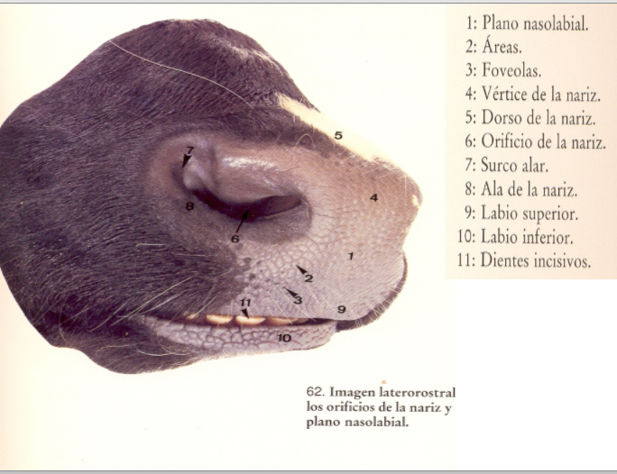
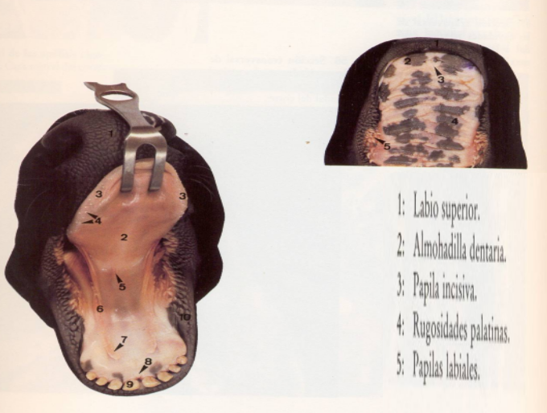

La cavidad oral (boca) está protegida por un par de labios. Los labios están altamente vascularizados, el tejido es de músculo esquelético con una gran abundancia de terminaciones sensitivas de nerviosas. Los labios ayudan a retener el alimento cuando se mastica y juegan un papel importante en la fonación (modificación del sonido).
 